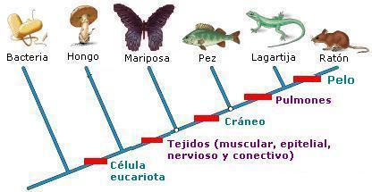
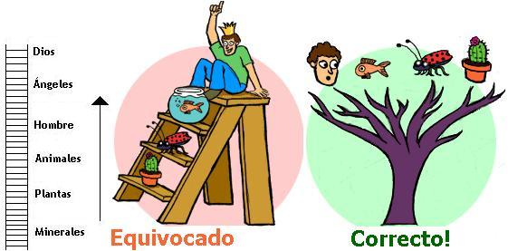
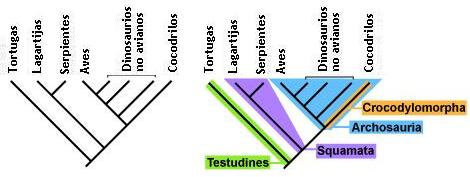
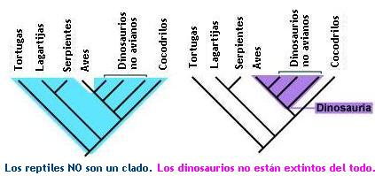
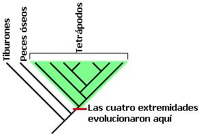

¿Qué es un cladograma?
Un cladograma es un diagrama que permite representar el parentesco evolutivo entre las especies. Este se parece a un árbol genealógico en que la base del árbol representa un antepasado común para los organismos o grupos ubicados al final de las ramas. Cuando hay una ramificación en un linaje esta se representa con una nueva rama. Todos los descendientes de esta nueva rama comparten un mismo ancestro y están más cercanos entre si que con los descendientes de otras ramas. Cada cladograma por representar las relaciones evolutivas entre un grupo de seres vivos se considera una teoría científica.

Un “clado” es la agrupación que incluye el ancestro común y todos sus descendientes, vivos o extintos. Estos conjuntos representan un grupo natural, pues su clasificación refleja la evolución del grupo.

Un clado puede estar conformado por una especie o por miles. Los clados están anidados dentro de otros, lo cual refleja que la clasificación biológica es jerárquica.

Los biólogos usan los cladogramas para tres propósitos: 1. Probar hipótesis sobre la evolución. 2. Aprender sobre las características de las especies extintas y los linajes ancestrales. 3. Clasificar los organismos según las características que heredaron de un ancestro común de forma tal que la clasificación revele la evolución de las especies.
En la imagen anterior se muestra el parentesco entre una bacteria, un hongo, una mariposa, un pez, una lagartija y un ratón. Junto a la línea del cladograma se notan unos cuadros rojos que indican las características compartidas. La característica que está más en la base es el de estar formado por célula(s) eucariota(s), todos los linajes que se derivaron desde este punto, los que conducen a los hongos, las mariposa, los peces, las lagartijas y los ratones poseen esta característica; La segunda característica señalada en este cladograma es la presencia de tejidos animales, todas las ramificaciones que hay después de este punto, las que conducen a las mariposas, los peces, las lagartijas y los ratones, poseen esta nueva característica. También podemos hacer una lectura de las características que tienen los organismos teniendo en cuenta la información proporcionada por el cladograma, así pues podemos decir basados en este cladograma que un ratón posee: células eucariotas, tejidos animales, cráneo, pulmones y pelo.
Basados en el anterior cladograma podemos afirmar también que un ratón está más emparentado con una lagartija que con un pez ya que el nodo de bifurcación entre los linajes del ratón y la lagartija está más próximo que el nodo de bifurcación de los linajes que llevan al pez y al ratón.
Como se nota en el cladograma anterior todos los organismos se colocan en las hojas, y cada nodo interior se divide en dos ramas. Los taxones que resultan de cada bifurcación se denominan taxones hermanos o grupos hermanos. Cada clado se define en base a una serie de características que aparecen en sus miembros y que fueron heredadas a sus descendientes. Estas características identificadoras del clado se llaman sinapomofías (caracteres compartidos derivados). Por ejemplo, la presencia del cráneo es una sinapomorfia de los vertebrados, mientras que los pulmones es una sinapomorfia de los pulmonados.
Una característica presente en un cladograma se denominan una “plesiomorfía” si se encuentra en los dos grupos externos del grupo que se está analizando. En nuestro cladograma anterior la presencia de cráneo es una característica plesiomórfica frente a la característica de pelo, ya que la característica de cráneo se encuentra también en los grupos hermanos al ratón, en la lagartija y el pez. La característica de pelo al estar presente solo en los últimos descendientes de nuestro cladograma, recibe el nombre de “apomorfía”. Los términos “plesiomórfico” y “apomórfico” se utilizan en lugar de “primitivo” y “derivado”.
Errores comunes sobre los cladogramas
Durante mucho tiempo los biólogos han cometido algunos errores en la clasificación debido a la idea de “la gran cadena del ser” del filósofo griego Aristóteles. Esta idea sostiene que hay organismos más perfectos que otros y organiza los seres en una escalera, colocando en la parte superior a Dios y en la escala más inferior a los minerales. El hombre está ubicado a mitad de la escalera, justo debajo de los ángeles y por encima de los animales. Esta idea pasó a la Europa cristiana, por lo que fue tomada en cuenta por los primeros naturalistas que trabajaron en la clasificación de los seres vivos. Debido a la influencia de “la gran cadena del ser” se ha generado la creencia que hay organismos “más evolucionados” que otros.
En la siguiente filogenia se muestra un evento de especiación que dio origen a dos linajes: Uno condujo a los musgos y otro llevó a los helechos, los pinos, los cerezos. Los musgos de hoy en día han acumulado la misma cantidad de tiempo de evolución que las plantas del otro linaje. Las especies de musgos actualmente existentes NO son los antepasados de nuestros pinos y cerezos. Los musgos actuales son primos de las otras plantas.

Es importante tener en cuenta que en un cladograma se representa el parentesco de diferentes linajes (A, B. C y D), no una escalera como la que pensó Aristóteles.

Tampoco debemos cometer el error al leer un cladograma de izquierda a derecha de interpretarlo como niveles “más avanzados.”

En un cladograma la derecha y la izquierda son arbitrarios. Lo importante es la posición relativa de los nodos, o puntos que conectan las ramas, los cuales representan los antepasados comunes de los animales nombrados al final de las ramas. Si retomamos el cladograma simplificado de los vegetales cualquiera de los dos que se ilustran a continuación tienen el mismo significado:

Este punto ilustra un error común que ya se ha tratado aquí en Sindioses. Los humanos no descienden de los chimpancés. Los humanos y los chimpancés son primos evolutivos, pues descienden de un mismo antepasado. Tampoco se puede afirmar que los humanos son “más evolucionados” que los chimpancés, pues ambos linajes (humano y chimpancé) han recorrido sus propios trayectos evolutivos que los han adaptado a sus respectivos ambientes. Muchas veces es necesario dejar esto en claro para evitar los malentendidos arriba mencionados, que son muy frecuentes en la mayoría de las personas cuando se habla de evolución.

Grupos naturales
El tipo de clasificación que usa cladogramas se denomina “sistema clasificación filogenética”. Este sistema solo nombra grupos que contengan al ancestro del linaje y todos sus descendientes. Para observar esto más de cerca analicemos el caso de los reptiles y las aves.
En el sistema de clasificación filogenético podemos nombrar los siguientes clados: Testudines (el cual incluye las tortugas), Squamata o escamosos (el cual incluye lagartos y serpientes), Archosauria (el cual incluye las aves, los dinosaurios no avianos, y los cocodrilos); El clado Crocodylomorpha incluye a los cocodrilos, caimanes y gaviales. Notemos también que el clado Crocodylomorpha está anidado en el clado Archosauria.
Si recordamos que un clado debe contener a todos los descendientes de un mismo ancestro podremos afirmar que el grupo “reptiles” no tiene validez como clado, pues dejaríamos por fuera a las aves. ¡También podemos notar que los dinosaurios no se extinguieron completamente pues las aves son una rama de su árbol evolutivo!
En el sistema de clasificación de Linneo los grandes simios y el hombre estaban ubicados en dos familias separadas: Póngidos para los orangutanes, gorilas, y chimpancés y Homínidos, reservada exclusivamente para el hombre. Sin embargo, los análisis genéticos señalaban que el hombre está cercanamente emparentado con el chimpancé y que comparte un antepasado común más cercano con este que con los otros simios. La antigua familia Pongidae no es un clado porque no incluye a todos los descendientes de un mismo ancestro; Deja por fuera al hombre. Por esta razón ahora se ubican los grandes simios y el hombre en la misma familia: Hominidae. También es importante notar que bajo el enfoque actual es incorrecto afirmar que el hombre es el único homínido vivo.

Características en los cladogramas
Los científicos al estudiar la anatomía de los organismos buscan “estructuras homólogas” que les permitan comprender que tan emparentados están los seres que estudian. Las estructuras homólogas son aquellas que fueron heredadas de un mismo ancestro. Un ejemplo de estructuras homólogas son las cuatro extremidades de los tetrápodos. Murciélagos, ratones, aves, humanos y cocodrilos tienen cuatro extremidades. Los peces óseos y los tiburones no. El antecesor de los tetrápodos desarrolló cuatro extremidades y así todos sus descendientes las heredaron.
No todas las características son homólogas. Los delfines y los ictiosaurios (ya extintos) presentan una aleta dorsal que les facilita nadar. Las vacas y los camaleones no tienen aletas dorsales, pero esto no significa que los delfines estén más emparentados con los ictiosaurios que con las vacas. Si analizamos todas las características anatómicas nos daremos cuenta que los delfines tienen más en común con las vacas que con los ictiosaurios. Las aletas dorsales de los cuerpos de los delfines y los ictiosaurios son análogas. Porque evolucionaron de forma independiente para cumplir la misma función en ambientes similares. Las estructuras análogas son resultado de la evolución convergente.


También es posible que después de haber evolucionado una característica algunas especies hijas las pierdan. Como mencionábamos antes el clado de los tetrápodos (tetra = cuatro, y podos = extremidades) incluye la primera especie que evolucionó las cuatro extremidades y todos sus descendientes. Sin embargo, algunos de ellos perdieron las dos extremidades posteriores como las ballenas y los delfines; mientras que otros perdieron todas las cuatro extremidades, como las cecilias (anfibios), las serpientes y algunos lagartos. No por esto, las ballenas y las serpientes dejan de pertenecer a este clado.

Ahora que sabes lo que es un cladograma y la importancia que tienen para los biólogos te invitamos a desarrollar la actividad Cladogramas: ¡Interpretemos cladogramas! publicado en Sindioses.org.
Volver a la sección Ciencias de los orígenes
Comentarios
Comments powered by Disqus